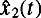

|
| |||||||||||||
|
|
||
Often it is not possible to directly measure the entire state of an LTI system. Rather, the state must be observed through the use of sensors that provide some lower-dimensional measurement of the current state. If it were possible to measure only velocity in the mass-spring-damper example, then equations of motion together with the output equation for the system would be
where y(t) represents the output signal coming from the sensor. We write a general LTI system with output equation as
where the state vector , the control vector , and the output vector . The constant matrix . Note that the matrix C may not be invertible (it is usually not even square!), so the state at any instant x(t) cannot be directly observed from the measurement at that instant y(t). We must instead reconstruct the state by measuring the output over some interval of time and using knowledge of the system dynamics. A device that performs such a reconstruction is called an observer.
We say that the system of equation (J.8) is observable if it is possible to determine the initial state x(t0)by observing the known signals y(t) and u(t) over some period of time.
As in the case of controllability, we say that the pair (A, C)is observable if the system in equation (J.8) is observable. Note that the pair (A, C)is observable if and only if the pair (AT, CT) is controllable. If the pair (A, B) is controllable and the pair (A, C) is observable, then the system [and the triple (A, B, C)] is said to be minimal.
Now consider an observer defined by the ODE
Note that this ODE requires that we know the matrices A, B, and C as well as the input u(t) and output y(t). The vector is called the state estimate produced by this observer. As shown in the block diagram in figure J.5, this observer is essentially a copy of the original dynamic system with a correcting term that is a linear function of the difference between the measured output y(t) and the estimated output . The task is then to try to choose K so that the correcting term forces the state estimate to converge to the actual value.
If we define the error signal , we can examine how the error evolves with time:
If e(t) → 0, then . So the state estimate that results from the observer presented in equation (J.9) converges to the actual state x(t) if K is chosen so that the unforced LTI system is asymptotically stable.
Recall that the eigenvalues of any matrix are equal to the eigenvalues of its transpose, so the eigenvalues of A − KC are identical to the eigenvalues of AT − CT KT. According to theorem J.3.2, we can place the eigenvalues of AT − CT KT in any allowable configuration provided that the pair (AT, CT) is controllable and the matrix CT has full column rank. This is equivalent to saying that the eigenvalues of A − KC can be placed in any allowable configuration provided that the pair (A, C) is observable and C has full row rank. Under these conditions, it is possible to chose a K so that the observer estimate converges to x(t).
Consider the mass-spring-damper system of equation (J.7). The matrix
The eigenvalues of this matrix are
so choosing k2 such that −γ − mk2 < 0 will guarantee that the observer given in equation (J.9) converges, meaning that after some initial transient, estimate will provide a good approximation of the state. For the case where m = 1, k = 2, and γ = 0, the choice of K = [0 2]T will provide a convergent observer. Figure J.6 shows how the estimates and  converge to x1(t) and x2(t), respectively.
|
|
||
|